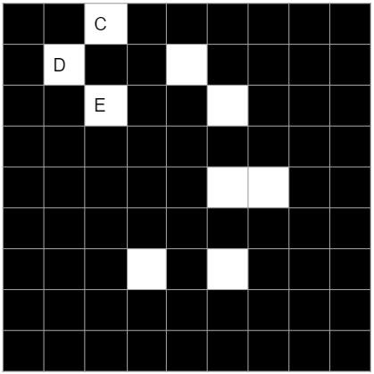

Yeji Park
Sudoku solver
(using forward checking and back tracking)
There are 2 rules in playing the sudoku.
1. Each line should contain 1 to 9 without repeating itself, vertically and horizontally.
2. Each block which consists of 3*3 boxes should contain 1 to 9 without repeating itself.
more informaiton
Each cell has its domain, which initially {1,2,3,4,5,6,7,8,9} then from the constrains, some elemets can be ruled out.

For example, cell A cannot have 1,3,4,7,8. There for the possible asnwer domain of cell A is {2,5,6,9}.
For the cell B, it cannot be 1,2,3,4,5,6,8,9. so the only one element in domain, {7}. Therefore, the cell B should be 7.
The main point is that each cell has its domain, so 81 domains. By ruling out some impossible answers from domain of cells, we could find the answer for the cells.
1. The concept of forward checking
Previously, we figured out the cell B is 7. We are solving sudoku with computer, so the domain of each cells can be stored in the memory and can be revised.
We wil delete 7 in the domains of the cell which are in the same row, column and the block. It is called "Domain revision".
Easy problem can be solved by only forward checking, but It is not enough to solve harder level of sudoku. Let's say, we finished all forward checking, but some cells are not decided yet.
Then what should we do now?
2. The concept of backtracking
3. How to solve sudoku using the combination of forward checking and back tracking?
Here is a sudoku, but could not be solved only by forward checking. so now, we need to try out some numbers and then if it can be possible or not.
The black cells all have answer, but the white cells have several possible elements in its domain.

Let's assume cell C,D and E each has the domain of {2,3,6}, {2,3,6} and {2,3,6}. (C,D,E) can be (2,3,6), (2,6,3), (3,2,6), (3,6,2), (6,2,3) and (6,3,2).
First, try 2 for cell C. since cell C is 2, The domain of D and E will be {3,6}.(forward checking; domain revision.)